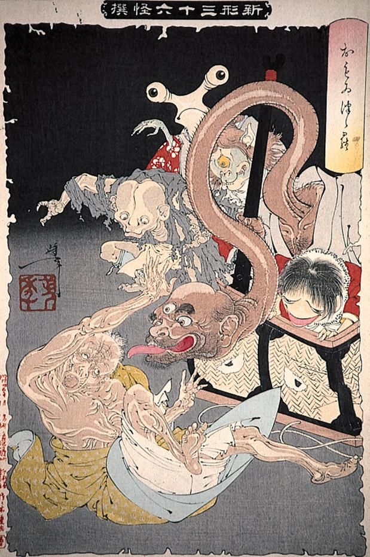

葛篭から飛び出したひげ面の入道。首が長く伸び、ろくろ首のようである。手には棍棒を持ち、三つ目で、長く舌を出している。
著作者：月岡芳年／出典：親書誌：A80_prague_0016：おもゐつづら；オモイツヅラ／日付：2011／資源識別子：A80_prague_0016_0001_0000
Copyright (c)2010- International Research Center for Japanese Studies, Kyoto, Japan. All rights reserved.